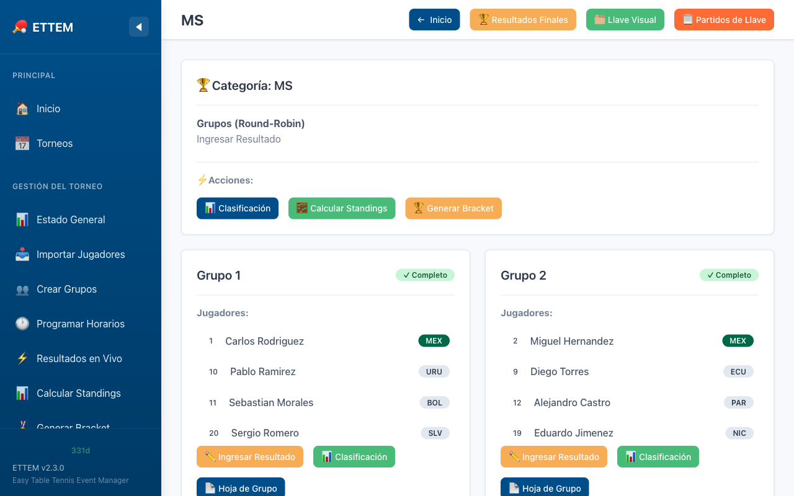

Ingresar Resultados
Cómo registrar los resultados de los partidos de grupos y del bracket (llave).
Resultados de la Fase de Grupos
Una vez creados los grupos, verás la lista completa de partidos pendientes para cada grupo. Para ingresar el resultado de un partido, haz clic en el botón Ingresar Resultado junto al partido correspondiente.

Cómo ingresar un resultado
- Haz clic en Ingresar Resultado del partido deseado.
- Ingresa los puntos de cada set para ambos jugadores (ej: 11–8, 11–9, 9–11, 11–7).
- ETTEM valida automáticamente los puntos según las reglas ITTF.
- Haz clic en Guardar para registrar el resultado.
Formatos de Partido (Bo3 / Bo5 / Bo7)
El formato se define al crear la categoría y determina cuántos sets puede tener un partido:
| Formato | Nombre completo | Sets para ganar | Máximo de sets | Uso común |
|---|---|---|---|---|
| Bo3 | Best of 3 | 2 sets | 3 sets | Fase de grupos juveniles |
| Bo5 | Best of 5 | 3 sets | 5 sets | Bracket individual, equipos |
| Bo7 | Best of 7 | 4 sets | 7 sets | Finales, competencias élite |
Reglas de Validación ITTF
ETTEM valida cada set ingresado conforme a las reglas oficiales de la ITTF. Un resultado será rechazado si no cumple alguna de las siguientes condiciones:
Reglas de un Set
- Un jugador debe alcanzar al menos 11 puntos para ganar el set.
- El ganador debe tener una diferencia de al menos 2 puntos sobre el rival.
- Si el marcador llega a 10–10, se entra en deuce: el juego continúa hasta que un jugador tenga 2 puntos de diferencia (ej: 14–12, 15–13).
- No hay límite máximo de puntos en deuce.
Ejemplos de resultados válidos
| Resultado | ¿Válido? | Motivo |
|---|---|---|
| 11–8 | Sí | Al menos 11 puntos, diferencia ≥ 2 |
| 11–0 | Sí | Válido (walkover o victoria aplastante) |
| 14–12 | Sí | Deuce, diferencia de 2 |
| 11–10 | No | Diferencia insuficiente (debe ser ≥ 2) |
| 10–8 | No | Ningún jugador llegó a 11 puntos |
| 12–11 | No | Diferencia de solo 1 punto en deuce |
Walkover (W.O.)
Un walkover ocurre cuando un jugador no se presenta al partido o se retira. Para registrarlo:
- Abre el formulario del partido.
- Activa la opción Walkover.
- Selecciona quién recibe el walkover (el ganador).
- Haz clic en Guardar.
Un walkover cuenta como derrota por 0 puntos en standings: el perdedor recibe 0 puntos de partido y 0 sets a favor. El ganador recibe 2 puntos de partido y los sets se calculan como victoria por sets mínimos necesarios.
Resultados de la Fase de Bracket (Llave)
El ingreso de resultados en la fase de bracket funciona de manera idéntica a la fase de grupos. La única diferencia es que al completar un partido, el ganador avanza automáticamente a la siguiente ronda del bracket.
- Ve a la categoría y selecciona la pestaña Bracket.
- Haz clic en un partido para ingresar el resultado.
- Al guardar, el bracket se actualiza en tiempo real.
Editar un Resultado ya Guardado
Si necesitas corregir un resultado, haz clic en el partido ya completado y selecciona Editar Resultado. Podrás modificar los puntos de cualquier set.